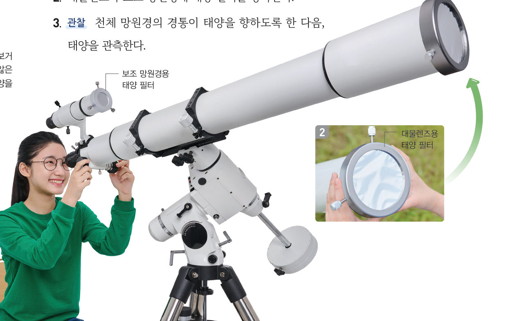
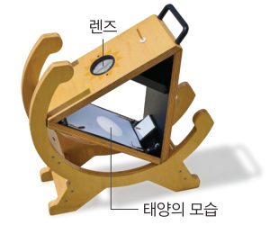
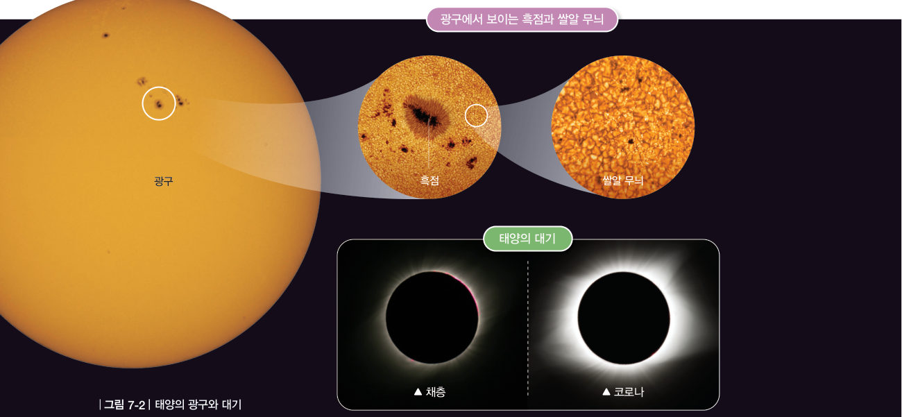
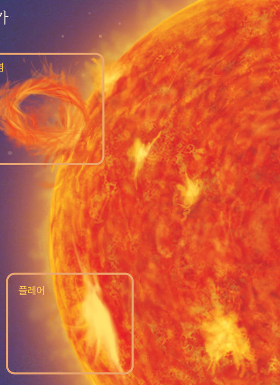
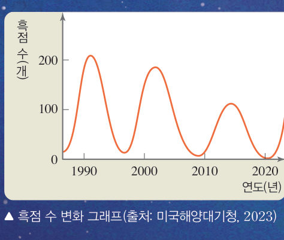
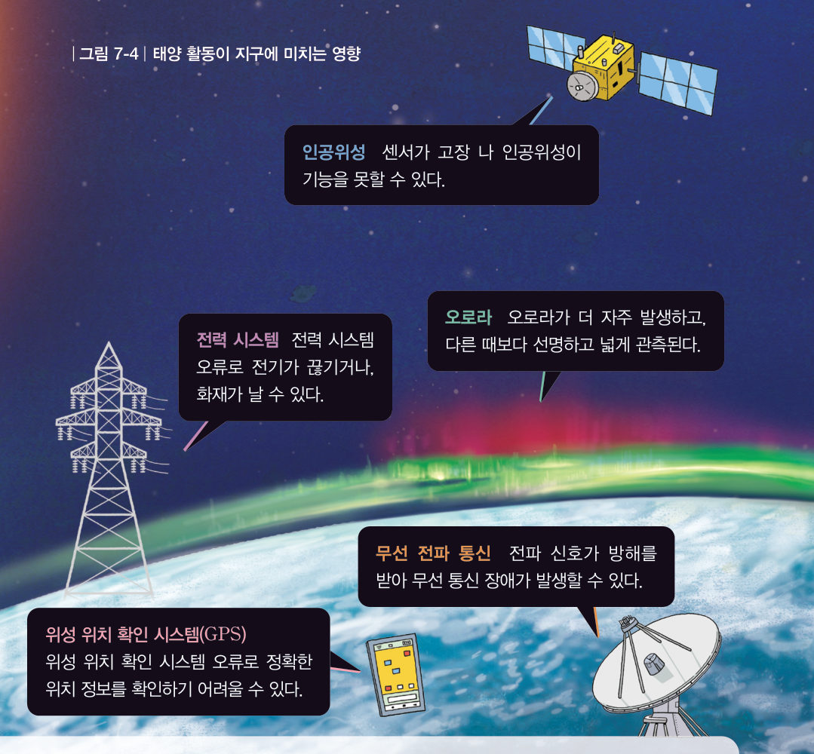

“나 이제 엄청나게 활동할 거야.” “주의해야 해!” 태양 활동이 활발해지면 지구에 어떤 일이 일어날까? 태양 필터를 단 가상 망원경과 3D 태양으로 태양의 표면과 대기를 관찰하고, 흑점 수 그래프로 태양 활동이 지구에 미치는 영향을 추론해 보자.
🎯 이 단원을 배우면 — 태양의 표면과 대기에서 일어나는 현상을 알고, 태양 활동이 지구에 미치는 영향을 추론할 수 있다.
탐구천체 망원경을 이용하여 태양 관측하기 232~233쪽
태양은 어떤 모습일까?
준비물 천체 망원경, 대물렌즈용 태양 필터, 보조 망원경용 태양 필터, 스마트 기기, 스마트 기기 어댑터
태양을 관측할 수 있는 곳에 천체 망원경을 설치한다.
대물렌즈와 보조 망원경에 태양 필터를 장착한다.
관찰 경통이 태양을 향하도록 한 다음, 태양을 관측한다.
스마트 기기 어댑터로 스마트 기기를 접안렌즈에 고정한 다음, 태양을 촬영한다.
관찰 촬영한 결과를 공유 플랫폼에 올리고, 친구들과 함께 관찰한다.
⚠️ 맨눈으로 태양을 직접 보거나 태양 필터를 장착하지 않은 천체 망원경으로 태양을 관측하지 않도록 주의한다.

232쪽대물렌즈용 · 보조 망원경용 태양 필터
가상 실험태양 필터를 단 가상 망원경
먼저 태양 필터를 장착한 뒤 관측해 보자. 관측 날짜를 하루씩 넘기면 흑점의 위치가 어떻게 달라지는지도 보자. (가상 실험이므로 필터 없이 눌러 보아도 안전하지만, 실제로는 절대 안 돼요!)
관측 준비
1태양의 밝은 표면에서 보이는 어두운 점을 이라고 한다. 날짜가 지나면 흑점은 .
2정리해 볼까 태양의 모습에는 어떤 특징이 있는지 이야기해 보자.
다르게 해 보기 · 태양 관측기 이용하기

렌즈 · 태양의 모습
태양 관측기가 태양을 향하게 하고, 렌즈를 통해 들어온 햇빛의 초점을 맞추어 태양을 관측한다. 정리 태양의 모습에는 어떤 특징이 있는지 이야기해 보자.
교과서태양의 광구와 대기 233쪽
스스로 빛을 내는 천체의 표면을 광구라고 한다. 태양의 광구는 평균 온도가 약 6000 ℃이고, 광구에는 그림 7-2와 같이 흑점과 쌀알 무늬가 나타난다. 흑점은 광구에 나타나는 불규칙한 모양의 어두운 부분으로, 주변보다 온도가 낮아 어둡게 보인다. 쌀알 무늬는 광구에 나타나는 쌀알 모양의 무늬이다.
●태양의 대기는 채층과 코로나로 구분된다. 채층은 광구 바로 위를 얇게 둘러싼 부분이며 붉은색을 띤다. 코로나는 채층 위로 넓게 뻗어 있는 부분이며 진주색을 띤다.
●태양의 대기 관측 평소에는 광구가 밝아서 대기를 보기 어렵지만, 광구가 가려지면 대기를 볼 수 있다.

그림 7-2태양의 광구와 대기 — 흑점, 쌀알 무늬, 채층, 코로나
3D 가상 실험3D 태양 탐험
아래 이름을 누르면 3D 태양에서 그 부분을 찾아 보여 줘요. [광구 가리기]를 켜면 개기일식 때처럼 밝은 광구가 가려져 채층과 코로나가 보여요.
3D 태양 · 드래그하여 돌리기이름을 눌러 보세요
1흑점이 어둡게 보이는 까닭은 주변보다 온도가 때문이다. 붉은색을 띠는 대기는 , 진주색으로 넓게 뻗은 대기는 이다.
교과서홍염과 플레어 234쪽

그림 7-3홍염과 플레어
태양의 대기에서는 그림 7-3과 같이 홍염과 플레어가 나타나기도 한다. 홍염은 광구에서 코로나까지 물질이 솟아오르는 현상으로, 불꽃이나 고리 등 다양한 모양으로 나타난다. 플레어는 흑점 부근에서 강력한 폭발이 일어나는 현상으로, 플레어가 나타나면 채층의 일부가 매우 밝아진다.
🔍 인터넷 검색 국립전파연구원 우주전파센터(spaceweather.rra.go.kr) — 오늘의 태양 활동에서 태양의 모습을 확인할 수 있다.
해 보기태양 활동이 지구에 미치는 영향 추론하기 234쪽
태양 활동이 지구에 미치는 영향은 무엇일까?
태양의 광구에서는 흑점이 생겨나기도 하고 사라지기도 하면서 그 개수가 달라진다. 흑점 수는 약 11 년을 주기로 많아졌다 적어지는데, 태양의 활동이 활발할수록 많아진다. 태양의 활동이 활발해지면 코로나가 커지고, 홍염과 플레어가 자주 나타난다.
흑점 수 그래프에서 흑점 수가 가장 많았던 해(극대기)를 눌러 표시해 보자. 표시한 해 사이의 간격으로 주기를 구할 수 있어요. (해마다의 평균 흑점 수, 출처: 벨기에 왕립천문대 SILSO 자료를 바탕으로 함)

234쪽흑점 수 변화 그래프 (출처: 미국해양대기청, 2023)
1흑점 수가 많아졌다 적어지는 주기는 약 년이다. 2020 년 이후에 태양 활동이 가장 활발해질 시기는 이다.
가상 실험태양 활동과 우주 날씨
태양 활동 정도를 바꿔 보자. 흑점·플레어·태양풍이 어떻게 달라지고, 지구에서는 어떤 일이 일어나는지 보자.
22020 년 이후 예상한 시기에는 태양 활동으로 지구에 어떤 일이 일어날지 추론해 보자.
교과서태양풍과 지구 235쪽
태양에서는 전기적 성질을 띤 입자들이 우주로 방출되는데, 이를 태양풍이라고 한다. 태양 활동이 활발할 때 태양풍은 더욱 강해지며, 이때 지구는 그림 7-4와 같은 영향을 받는다. 예를 들어 인공위성과 전력 시스템이 기능을 못하거나 무선 전파 통신에 장애가 생길 수 있고, ●오로라가 더 자주 발생한다. 오늘날에는 태양 활동을 지속적으로 관측하고 예보하여 태양 활동으로 생길 수 있는 영향에 대비하고 있다.

그림 7-4태양 활동이 지구에 미치는 영향 — 인공위성, 오로라, 전력 시스템, 무선 전파 통신, GPS
●오로라 태양에서 방출된 전기적 성질을 띤 입자가 지구 대기에 부딪쳐 빛을 내는 현상
스스로 확인하기232쪽 학습 목표를 달성했는지 확인해 보자 235쪽
1개념 확인 광구에서 코로나까지 물질이 솟아오르는 현상을 ( )(이)라고 하고, 흑점 부근에서 강력한 폭발이 일어나는 현상을 ( )(이)라고 한다.
2사고력 태양 활동을 예보하는 일이 과거에 비해 현대 사회에서 더 중요해진 까닭을 설명해 보자.
🧩 첫 번째 블록 · 힌트 조각 2 (235쪽)
태양의 대기에는 채층과 ( )이/가 있다.
5분 테스트활동하는 태양
1태양의 는 평균 온도가 약 6000 ℃이고, 우리 눈에 보이는 태양의 밝고 둥근 표면이다. 태양의 표면에서 수많은 쌀알을 뿌려놓은 것 같은 무늬를 라 하고, 불규칙한 모양의 어두운 부분을 이라고 한다.
2그림 7-2의 태양의 대기에서 (1) 광구 바로 위를 얇게 둘러싼 붉은 부분: , (2) 채층 위로 넓게 뻗은 진주색 부분:
3광구에서 코로나까지 물질이 솟아오르는 현상으로, 불꽃이나 고리 등의 모양으로 나타나는 것은 이다. 흑점 부근에서 폭발이 일어나 채층의 일부가 순간 매우 밝아지는 현상을 라고 한다. 태양에서 전기적 성질을 띤 입자들이 우주로 방출되는 것은 이다. 태양의 활동이 주기적으로 변하는 것은 의 변화로 알 수 있으며, 변화 주기는 약 11 년이다.
4태양의 활동이 활발할수록 흑점 수가 지고, 홍염과 플레어가 자주 나타나며, ( )이/가 더욱 강해진다.
⑨ 태양의 활동이 활발할 때 지구에서는 오로라가 더 자주 발생한다.
⑩ 태양의 활동이 활발할 때 지구에서는 무선 전파 통신이 잘 연결된다.
스스로 정리하기태양과 태양 활동 · 첫 번째 블록 찾기 236쪽
2태양과 태양 활동
(1) 태양 · : 광구에 나타나는 불규칙한 모양의 어두운 부분 · 쌀알 무늬: 광구에 나타나는 쌀알 모양의 무늬 · 채층: 태양의 대기 중 광구 바로 위를 얇게 둘러싼 부분 · : 태양의 대기 중 채층 위로 넓게 뻗어 있는 부분 · 홍염: 광구에서 코로나까지 물질이 솟아오르는 현상 · : 흑점 부근에서 강력한 폭발이 일어나는 현상 (2) 태양 활동이 활발할 때 태양풍은 더욱 강해지며, 지구는 그 영향을 받는다.
🧩 첫 번째 블록 찾기 · 조각을 모아 답하기
태양은 어떤 특징이 있는 천체일까?
조각 1 (231쪽) 태양은 스스로 빛을 내는 천체이다. · 조각 2 (235쪽) 태양의 대기에는 채층과 코로나가 있다.
나의 학습 확인하기1. 태양계의 구성 돌아보기 236쪽
평가 항목
스스로 평가
지식·이해 태양계를 구성하는 천체를 설명할 수 있는가?
과정·기능 천체 망원경으로 천체를 관측할 수 있는가?
가치·태도 밤하늘 천체에 호기심을 품고 천체를 관측하는 활동에 적극적으로 참여했는가?
💬이번 활동에서 알게 된 점, 어려웠던 점, 더 알아보고 싶은 점을 써 주세요.
제출학생 정보 · 제출하기
모든 활동을 마친 뒤 제출하면 전체가 한 번에 채점되고 피드백이 나타나요. 답안은 선생님 스프레드시트(중1 탭)에 기록돼요.